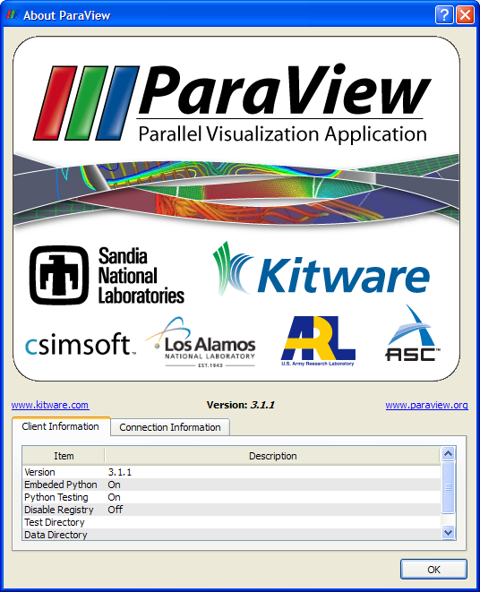

From the Help menu, you have access to various tools to obtain more information about ParaView.
Display a dialog box containing the ParaView splash screen, ParaView version information, and information about the ParaView client and any server connections.

Use this menu entry to display this Help browser.
Selecting this item toggles the visibility of tooltips in the ParaView client. If tooltips are enabled (the default), then moving the mouse over a user interface component will cause a short help message (if available) associated with that component to be displayed in a yellow box.